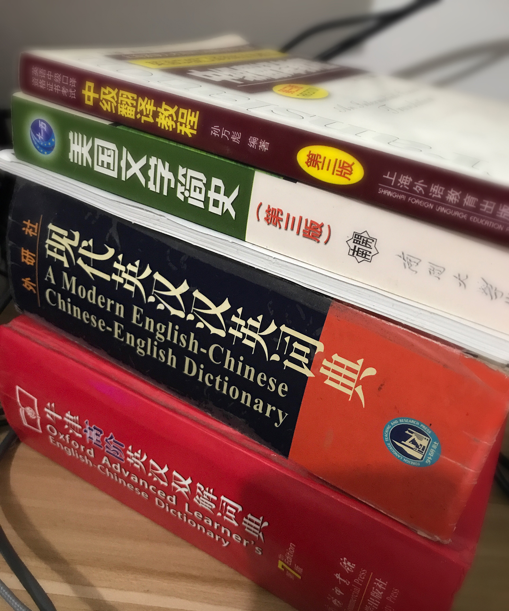
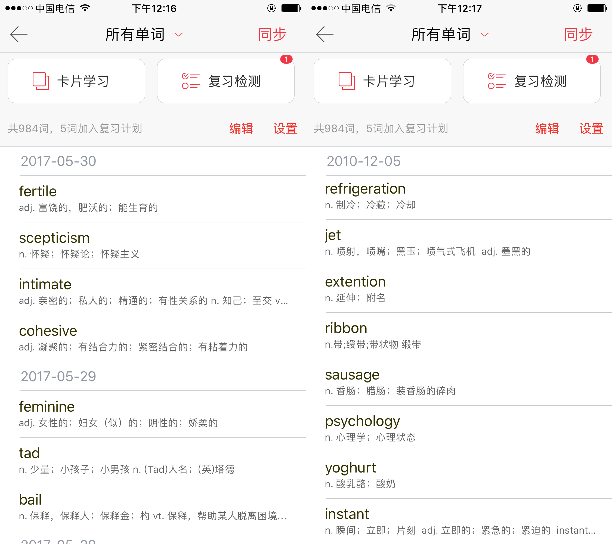

单词篇
单词篇
单词是构成一门语言的基石。当你学习一门语言的时候，一定要从基础开始，没有基础，你就无法更好更快更轻松地学习。 想要跳过单词进行学习，会让自己在今后的学习中花费（更准确的说应该是浪费）更多的时间，循序渐进，才是学习英语的好方法。 词汇量具有从量变到质变的显著特征，当你掌握的单词数量达到一个分水岭的量之后你会发现学习英语变得异常轻松起来。 得益于语境的帮助，你可以推断出大部分生词的意思，从而可以利用更优秀的原版英语学习材料让学英语如虎添翼，比如：经济学人，英文原著。 首先来看看一下英语单词的分布：

原图片来源于牛津英文语料库（OEC），我用sketch对照着做了一份，sketch文件在repo的 assets 文件夹内
从这张图可以得出的简单信息是： - 1000词汇量就能让你理解约75%的英语内容 - 7000词汇量是一个关键的分水岭（只需7千单词就能理解接近90%的内容是不是很激动？） - 背单词的回报率是递减的
那就先定个小目标：先试试7000个单词。拆解一下，每天40个，在不遗忘的理想情况下只需要175天！
视觉 vs 听觉
在开始扩充词汇量之前，希望你能花点时间了解自己的学习特点。视觉型学习者与听觉型学习者，在学习英语的方法上有着较大的差异。 视觉型学习者通过将单词的 视觉化 的方式去记忆单词，比如将单词与 图像/视频 绑定，甚至是将 单词本身 看做是一个 视觉图形/符号 ，有些视觉型学习者可以把单词写几遍就记住了。 视觉对于增强人的记忆有着神奇的效果，同时也有一定的负面作用。 这体现在当你看到某个图像的时候可能迅速的联想到某个单词，可是当你脱离这个图像的时候你居然完全不知道这个单词是什么意思。 （有很大一部分背单词的软件采用图片卡的形式，当你对着软件给出的图片进行复习时，你会觉得你记住了这个单词。然而实际情况是你记住了这个图片，这个图片与单词之间还有一层的映射关系，你过多的将注意力放在了图片上面，从而忽略了图片本身想要表达的单词。） 我想给出建议是，视觉化背单词应该采用 抽象 的方法，将单词对应的视觉信息抽象成你理解的事物。 举个例子:'cat' => '猫';单词软件会给你提供某个具体的关于猫的图片，如

但是这可能并不是你理解的猫，因为在其实你的脑海里有一个你抽象后的形象代表猫，他可能是这样的:

也可能是这样的:

也可能是这样的:

也可能是这样的:

甚至是这样的（他会是你所能手绘出来的图像）:

当然也有可能是这样的:

将单词通过 抽象 的方法去视觉化可以更好帮助你将单词与单词的涵义联系起来。
听觉型学习者在学习语言的时候有着天然的优势，通过大量的 听 来学习是更接近自然的语言学习的。如果你发现你属于听觉型学习者，那么你很幸运，你在学习英语方面会比常人轻松很多。 然后大部分听觉型学习者并不了解听觉型学习的正确方法，在他们意识到自己属于听觉型学习者的时候很可能已经养成的视觉型学习的习惯。 听觉型学习者想要充分利用自身优势的话，必须掌握 发音 方面的知识。一旦你拥有了良好的 发音 基础，你就可以将听到的大部分内容转化为拼写正确的单词，然后通过感兴趣的语音内容让学英语如虎添翼。 所以如果你觉得自己可能属于听觉型学习者的话，一定不要错过本指南的 发音篇 与 听力篇。
无论你是听觉型还是视觉型学习者，在学习单词的时候，在条件允许的情况下，请务必用词典听听单词的发音！
国内很多技术类教学视频中蹩脚的单词发音真的令人很出戏，而实际上互联网充斥着大量的免费教学视频，他们以英文的形式存在，讲师水平高，发音准确，而且教学内容与时俱进。
Ronnie老师有一篇关于记单词的视频，YouTube链接 | 优酷链接
两种背单词的方法
第一种 每天适量背诵
优点：
- 时间分配灵活且占用短（适合利用地铁时间、睡前等零散时间）
- 负担轻
- 不易产生挫败感
- 适用于学习核心词汇
缺点：
由于 背单词的回报率是递减的且通常没有有效的正反馈 ，实际情况往往是背到800个选择放弃，背到1000个选择放弃，背到1001个选择放弃。
第二种 超量输入
通过背诵大量的单词并快速复习，遗忘率虽然相对于定量背诵高，但是可以以量取胜。 比如:一天背20个词，一个月能背600个，假设形成长期记忆的占80%，那最后能记住的便是480个。 但是如果我用相同时间，每天快速看100个词，一个月能看3000个。假设能记住30%，最后能记住900个，远远大于第一种方式。 适用于在1000~7000词汇量这个学习阶段。
当你的词汇量在超过7000的时候，你应该具备了通过词法和语境去学习'新的单词'的技能，具体的做法会在以后的章节详解。 这两种方法的具体适用情况请根据个人学习习惯来定。
背单词的技巧
- 重复，重复，重复 （无他，唯手熟尔）
- 使用小纸条、便签 （将单词放在可以经常看到的地方，时不时瞥一眼）
- 做图像标记 （可以给狗狗做个简笔画）
- 单词搭配、造句 （语境不仅可以帮你记忆还有助于你更好地使用单词）
- 大声 朗读 （还记得某阳疯狂英语么）
- 将部分单词赋予 特殊意义（比如 机器学习、编程、女朋友等）
艾宾浩斯记忆曲线
人的记忆周期分为短期记忆和长期记忆，记住一个单词指的是形成长期记忆。 遗忘曲线（Forgetting curve）是用于表述记忆中的中长期记忆的遗忘率的一种曲线。 这一曲线最早由心理学家赫尔曼·艾宾浩斯通过自己的实验提出。在这一实验中，艾宾浩斯使用了一些毫无意义的字母组合。通过记忆这些字母组合，并在一系列时间间隔后检查遗忘率，得到了这一曲线。 因此，这一曲线又叫艾宾浩斯遗忘曲线。

该曲线表明：遗忘进程是不均衡的，在识记的最初遗忘很快，以后逐渐缓慢，到了相当的时间，几乎就不再遗忘了，也就是遗忘的发展是“先快后慢”。 遗忘的进程不仅受时间因素的制约，也受其他因素的制约。学生最先遗忘的是没有重要意义的、不感兴趣、不需要的材料。不熟悉的比熟悉的遗忘的要早。一般记住后，在5分钟后重复一遍，20分钟后再重复一遍，1小时后，12小时后，1天后，2天后，5天后，8天后，14天后就会记得很牢：
先把单词比看成简单的 键值对
'英语单词'=>'对应的汉语释义（更多的情况下是数组）'，尝试直接记忆这样键值对： - 第一个记忆周期是 5分钟 （早上花五分钟的时间学习10个新词试试） - 第二个记忆周期是30分钟 （半小时后，先花5分钟去复习刚才学习的10个新词，然后再花5分钟的时间去学习10个新词） - 第三个记忆周期是12小时 （睡前再花15分钟左右的时间来复习一下今天学习的20个单词吧）
这三个记忆周期属于短期记忆的范畴(学习与复习所用的时间只是一个大概的数值，请根据自己的习惯来调整)
下面几个属于关键的周期: - 第四个记忆周期是 1天 - 第五个记忆周期是 2天 - 第六个记忆周期是 4天 - 第七个记忆周期是 7天 - 第八个记忆周期是15天
以上的8个周期应用于背单词，作为一个大的背词的循环的8个复习点，可以最大程度的提高背单词的效率。所以，制定一个记忆计划，利用记忆曲线的规律，去复习单词，从而形成长期记忆。用14天的时间试试吧，我想结果会让你惊讶的。
举个我个人实战的例子：
高中时具体的做法是：因为当时学校是 10 本书一起发下来的，所以我就花了大概 3 节课的时间把这 10 本书的所有单词过一遍，然后把记不住的全部誊抄下来。 然后我就拥有了一个单词本，之后就经常翻单词本咯。 每一次复习，如果某个单词确定自己掌握了，形成了长期记忆，那就将这个单词从单词本中划掉。 你甚至可以在单词附近做一些记号，比如用 三角形 代表"这是个有趣的单词"，圆 代表"这是最近看的某本书或某个视频里面的"，耳朵 符号表示"发音比较没把握"等：

这个习惯我一直保留至今(从 2010 年 12 开始)，只不过我不再用纸质的本子，而是将其同步到了词典软件上，每天午休期间和晚上健身后翻翻。 我搭配使用上面介绍的两种背单词的方法，因为当你的单词本单词达到500甚至更多的时候，你需要尽可能复习更多的单词。 不然就准备两本词典，经常翻吧。 
厚重的字典携带起来是极为不便的，还是给自己准备一套顺手的词典软件吧。 图中两本词典我用了很久，已经坏掉了。
使用云单词本
云单词本的作用是集中管理生词以便随时复习!
无论是在哪里遇到的生词，请一定要集中放到一个可以多终端同步的生词本里，不然之后你去哪找那些遇见的生词呢？ 至于我使用的是哪个词典软件，就不打广告了，只要是拥有多端同步的 app 对我而言都差不多。放张截图：

你可以看到，有些单词就算复习了7年，还是不敢确定自己是完全记住的。
把单词当成 对象
如果你并不了解 面向对象 的概念可以选择跳过本小节或者先去了解相关的概念
你可能会发现有些单词是在一些'基础单词'之上经过'特定的规则进行变化'得到的，这和面向对象编程的思想有着异曲同工之妙。 我们可以把这种特性看成是 "继承"与"多态"，那么我们要学习的其实是 扩展的方法，而不是将这些变化后的单词当成是新的单词来背诵。
单词学习与背单词并不是等价的，这意味着我们可以采用更好的方法去学习单词
Anki背单词软件
Anki是一款多平台的背单词app，Anki使记忆变得更加容易，它可以一个自定义多功能的记忆方式，减少学习时间，提升你的学习容量，提高学习效率。
为了帮助大家更方便地背诵高频词汇，在此分享一份「麦克米伦7000词汇」Anki卡（感谢 赛门喵Simon 的优化），特色如下： - 添加音标 - 添加例句 - 添加图片 - 添加例句翻译
链接: https://pan.baidu.com/s/1i5OLIIT 密码: jm4k
因为上面卡牌包制作时间久远，在一些移动平台会出现#76问题，更新如下：
- 修改了词牌样式，减小字号，调整背面答案字段顺序等，以适配移动端应用
- 通过Localize Media插件离线所有图片等资源。
推荐的单词书


这本书适合具有一定词汇量基础的人（大约7000），也是备考托福和GRE时被推荐较多的词法书，俗称韦氏小绿书。 在很多人的印象里面，韦氏小绿书似乎就是一本用来记词根词缀的书，但这本书真正的价值并不在于此。 韦氏小绿书虽然提供了250个词根，但这些词根在实用价值上并不大。 这本书最大的好处在于提供了一个通过语境记单词的方法。 人脑并不擅长记忆分散的没有逻辑联系的事物，只有将单词放在一个个具体的语境中，我们才能理解以及使用它。 秉承这一思想，韦氏小绿书对于单词的诠释分为三个部分：英文释义，例句以及作者对于单词的个性化说明。 除了别具一格的单词解读之外，韦氏小绿书安排了大量的巩固测试题，而且这些测试并不只是简单考单词的含义，而是考察单词在语境中的具体使用以及对形近词的辨析。 在你拥有一定词汇量的时候希望不要错过这本小绿书。
背单词的时候大多数时候不需要刻意的去记，简单的过一下就行，生词，生 词嘛，多过过，自然而然就熟悉了
下一篇：听力篇